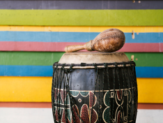

ferio
Ethiopian music is a vibrant and diverse musical tradition that reflects the country's rich cultural heritage. Rooted in ancient traditions, Ethiopian music blends unique rhythms, melodic patterns, and soulful vocals to create a captivating and distinctive sound. From traditional folk music to contemporary genres like Ethio-Jazz, Ethiopian music encompasses a wide range of styles, each with its own character and significance. The melodies are often characterized by hauntingly beautiful scales and intervals, evoking a sense of nostalgia and deep emotion. Ethiopian music plays a vital role in cultural celebrations, religious ceremonies, and everyday life, serving as a means of storytelling, expressing emotions, and preserving the country's history. Whether it's the hypnotic beats of traditional drums or the enchanting melodies of the masenqo and krar, Ethiopian music continues to captivate listeners worldwide with its authenticity, passion, and timeless appeal.